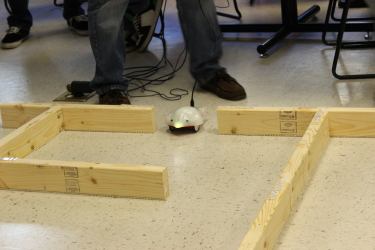
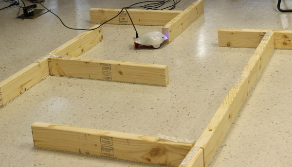
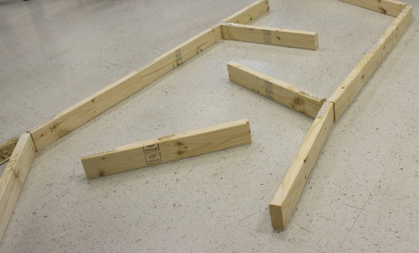

James Madison University, Spring 2014 Semester
Lab15A: Finch robot obstacle course

Background
We've been studying exact solutions to well-defined problems all semester long. Ill-defined problems are those that do not have clear goals, solution paths, or expected solution (Wikipedia: problem solving). Sometimes an educated guess is the best algorithm. Today you will experiment writing programs that navigate a Finch robot through a maze.
Objectives
Review loops, decisions, and method calls.
Practice iterative development and testing.
Instructions
-
You may use the following code as a staring point:
 Maze.java
Maze.java -
Throughout the lab, we will have a friendly competition. The winning robot must successfully navigate a small maze of 2x4's arranged on the floor.
-
Be sure to set the LED to a different color for each state of your program. This technique makes it a lot easier to debug your code.
-
Don't forget to program an ending sequence. For example, you may cover the light sensors by hand to instruct the Finch to terminate its control loop.
Your robot must be completely autonomous. The following rules apply:
-
Once you start your program, you must let it run to completion.
-
You may NOT control your Finch interactively from the terminal.
-
You may NOT pick up and change the direction of your Finch.
-
You may interact with the Finch using any of its sensors.
Submission
Create a plain text file named reflection.txt and answer the
following questions.
-
What heuristics did you use in your solution? Why did you decide to use them instead of others?
-
Which strategies performed the best during the competition? What did you learn by participating?
-
Over the course of the semester, what gave you the most difficulty and how did you overcome it?
Submit your reflection via Canvas by the end of the day. Don't forget to write your name at the top of the file.
Example Courses

